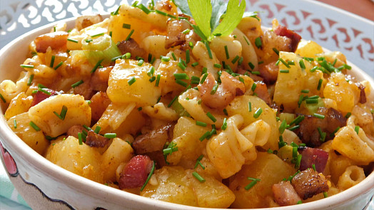

Tradiční české jídlo z těstovin, brambor a cibule.
Oloupeme brambory, nakrájíme na malé kousky a dáme vařit do osolené vody.
V dalším hrnci uvaříme těstoviny.
Nadrobno pokrájenou cibuli orestujeme na rozpáleném tuku, aby zesklovatěla. Těsně před odstavením ji zaprášíme červenou paprikou.
Hotové brambory a těstoviny spolu s orestovanou cibulí dobře promícháme.
Směs dáme do varné mísy a necháme mírně zapékat v předehřáté troubě asi 15-20 minut. Podáváme s kyselými okurkami.